从 Notepad 到蒙文编辑器
UME 项目组内部教程 · A03（A） · 擦与写、脏矩形、缓存，以及簇、钳制、分段、映射、扩张这五个概念
C++ Qt 编辑器架构 增量渲染
A01 讲整形，A02 讲落笔。两篇合起来解决了「一个字怎么画」。 本篇往上走一层：一整篇文档怎么画，以及改一个字之后怎么只重画该画的那一块。
不从术语开始 —— 从最笨的编辑器开始。
先看 Notepad 是怎么把字画在屏幕上的（第 1–5 节）， 再看不做增量会付出什么代价（第 5–8 节）， 最后才是蒙文特有的东西：簇、钳制、分段、映射、扩张（第 9–14 节）。
顺序很重要：先有「擦和写」的直觉，才看得懂「增量」要解决什么； 先知道「重画整屏很贵」，才明白为什么需要那么多记账。
1一个能用的编辑器只要三件事
Notepad 那一级的文本编辑器，骨架只有三个角色：
| 角色 | 回答什么问题 | 数据 |
|---|---|---|
| 存储 | 文档里有哪些字符 | 一块字符数组 |
| 排版 | 哪个字放在屏幕的哪个位置 | 行号 + 行内偏移 |
| 绘制 | 把字形画成像素 | 调 GDI / Qt 的画字接口 |
没有属性表、没有撤销栈、没有缓存 —— 因为 Notepad 不需要。 它的字体是全局的一种，格式根本不存在。

2屏幕是有记忆的
这是本篇最重要的一句话，后面所有东西都从它推出来：
你以为的：屏幕 = 我这次画的东西
实际的：屏幕 = 上次画的 + 这次画的（叠在一起）
屏幕不会自己忘事。上一次画上去的像素，会一直待在那里， 直到有人主动用背景色把它涂掉。
所以「画」这个动作在那个循环里其实是两步：
少掉「擦」这一步，就会出事。
3第一次残影
屏幕上画着一个蒙文词，五个字形：
用户删掉最后一个字母。整形结果变成四个字形，而且第 4 个字形变窄了 （从「词中形」变成「词尾形」，53.62 → 44.92）。
用户看到的是：「删了，但那个字母还在」。这就是残影。
文本光标。光标从位置 A 移到位置 B，如果只画新光标、不擦旧光标， 屏幕上就会出现两个光标。老式远程桌面里那种「一排光标」就是这么来的。
4脏矩形：把「该擦哪儿」记下来
既然擦是必须的，那就要知道擦哪儿。这个信息有个通用名字：
脏 = 我在这块地方画过东西，但现在不敢保证它还是对的。
矩形 = 它是一块屏幕区域，用四个数表示：左、上、宽、高。
它是给绘制器的指令：这块先清空，再重画。
这不是 Office 的发明，是 GUI 的通用机制。Windows 的
WM_PAINT 消息传给你的 ps.rcPaint 就是一个脏矩形 ——
系统直接告诉你「这块过期了，你重画它」。

为什么要「攒」
用户连敲 5 个键，会产生 5 个脏矩形。如果每个键都立刻重画：
合并 = 取它们的包围盒。五次编辑，一次重绘。
5全量重画到底多贵
到这里为止都没问题 —— 只要文档小。文档一大，账就不一样了。
| 文档规模 | 每帧做什么 | 代价 |
|---|---|---|
| 一屏几十行（Notepad） | 重画可见区 | 不到 1 ms，随便画 |
| 3000 段、60 万码位 | 全部重排 | 3000 × 200 µs ≈ 600 ms |
| 同上 | 只重排 1 段 + 平移 | 0.2 ms + 0.05 ms ≈ 0.25 ms |
差三个数量级。600 ms 意味着每敲一个键卡半秒。
因为它一屏只有几十行、纯文本推进几乎免费，而且没有整形—— 不需要问 HarfBuzz「这几个字合成哪个字形」。
一旦加上「格式」「蒙文连写」「竖排」「撤销」，每条便宜路都被堵死， 就不得不做增量。
6缓存：什么能存，什么不能存
要增量，就得把上次算的结果留着。这份留着的东西叫缓存。
| 东西 | 能重算吗 | 所以是 |
|---|---|---|
| 文本、属性 | 不能（用户输入的唯一来源） | 真值 |
| 字形序列 | 能（喂给 HarfBuzz 就有了） | 缓存 |
| 每个字形的屏幕坐标 | 能（按 advance 累加） | 缓存 |
| 簇边界的位置表 | 能（从布局里查） | 缓存 |
关键性质：把所有缓存删掉，程序结果必须完全一样，只是变慢。 做不到这一点，说明有东西被错当成了缓存。
7缓存按什么建键
这一条决定了缓存的命中率，也决定了「撤销要不要重算」。
键 = { 字体族, script, 语言, 方向, 特征集, 词文本 }
值 = 5 个字形（字形号 + 推进量）
注意：键里没有「文档偏移」这一项。
因为它回答的问题是「这个词长什么样」，而不是「第 3000 号位置长什么样」。 位置不在问题里，自然也不在答案里。
| 场景 | 位置 | 命中？ |
|---|---|---|
| 在另一个位置输入同一个词 | 变了 | ✅ 命中 |
| 删掉后撤销 | 回来了 | ✅ 命中，零整形开销 |
| 文档里本来就有 200 处同一个词 | 各不相同 | ✅ 只存一条 |
3000 行的文档，在第 1 行插入一个字符 —— 后面所有位置都变了， 3000 条缓存全部失效，整篇重排。
这叫位置漂移。任何按偏移量建的缓存，都会被「在前面插一个字」整体打穿。
8局部坐标 + 原点
还有一个让「只重排一段」成立的前提：不要存绝对坐标。
| 存法 | 前面插入一个字符时 |
|---|---|
| 每个字形存绝对 y | 3000 段全部要改 → 等于全量重排 |
| 每段存原点 + 段内局部坐标 | 只改原点偏移 → 一次加法 |
所以第 1 行插入一个字、行高增加 20px 之后：
2999 行的内部布局一个字节都不用动，只是整体下移了 20px。 「重排」只有一行，「平移」是全体 —— 而平移便宜到可以忽略。
9蒙文让这件事变难：簇
到这里，前面说的都是任何编辑器都有的东西。蒙文从这一节开始插进来。
屏幕上那个词有 6 个码位，但只有 5 个字形：
| 字形 | 推进量 | 码位 | 说明 |
|---|---|---|---|
u182E.M.init | 31.48 | 0 | 词首 |
u1823.O.medi | 36.67 | 1 | 词中 |
u1829.AG.medi | 39.30 | 2 | 词中 |
u182D_u1823.GO.medi | 53.62 | 3（吃掉 4） | GA + O 合成一个字形 |
u182F.L.fina | 24.52 | 5 | 词尾 |
第 4 个字形占了两个码位（3 和 4）。所以码位 4 不是合法的插入点 —— 它在一个不可分的单位内部。
这个单位叫簇（cluster）。手册的定义是 「a sequence of codepoints that must be treated as an indivisible unit」。
于是编辑器多了一条硬规则：
| 命令 | 删多少 |
|---|---|
| 退格 | 一簇（可能是两个码位） |
| 方向键 | 一簇（从 3 直接跳到 5，跳过 4） |
| 选区端点 | 只能落在簇边界上 |
| 复制 | 簇对应的原始码位，不是字形 |
10钳制：把编辑参数对齐到簇边界
把编辑位置对齐到合法边界。合法边界 = 簇边界。
它回答的问题：这次改动改得对不对。
用户能给出的位置是任意的（鼠标点击、拖选、程序调用），但合法插入点只有簇边界。 钳制就是那道校正 —— 而且它往哪边钳取决于语义：
| 操作 | 钳制方向 |
|---|---|
| 点击定位 | 看点落在簇的前半还是后半 |
| 退格 | 钳到簇的起点 |
Delete | 钳到簇的终点 |
| 拖选 | 两端都外扩到簇边界（不能只选半个） |
不钳制会怎样：实测
假设实现偷懒，退格老实删一个码位 —— 从那个词里只删掉 O，
留下 GA 后面直接跟 L：
u182E.M.init 31.48 u1823.O.medi 36.67 u1829.AG.medi 39.30 u182D.G.medi 21.12 nirugu.extend 10.75 ← 字体自己插进来的连接符 u182F.L.fina 24.52 总宽 163.84
那个 nirugu.extend 是字体在 GA 和 L 之间
自己补的一个长连接符。它看起来「还连着」，但文本已经变成一串谁也没打算写的字符。
用户下次复制这段、或者换一支字体，问题就会暴露出来。
11分段：所有合法边界的唯一来源
给定一段文本和属性表，输出哪些位置是边界： 簇边界、词边界、整形单元边界、绘制单元边界。
它是唯一有权说「这里要断开」的地方。别人只许读，不许自己算。
为什么必须唯一：如果整形自己判一次、绘制自己判一次、光标自己判一次， 就会有三份边界，而且必然不一致。结果是光标和文字差半个字 —— 这是编辑器里最难查的一类 bug。
它的策略是「尽量不断」
切整形单元会切断整形上下文。实测：把一个词从不同位置切成两段分别整形：
| 怎么切 | 字形数 | 总推进 |
|---|---|---|
| 整词一个 run | 5 | 11878 |
| 在 3\|4 之间切 | 6 | 15405 |
| 每码位一个 run | 6 | 19701（+66%） |
最后一行说明：切到最后，连写全没了，宽度涨了三分之二。
所以分段器的规则是：整形属性不同才切，词内其他情况一律不切。
12映射：两个方向的翻译
三个坐标系之间的双向翻译：模型（码位偏移）、簇（字素序号）、 视觉（行 + 像素）。
它回答两个方向的问题：这个像素点是哪个字（命中测试）和 这个字画在哪儿（光标几何）。
| 方法 | 方向 | 用在哪 |
|---|---|---|
hitTest(点) | 像素 → 码位 | 鼠标点击、拖选 |
caretRect(码位) | 码位 → 像素 | 画光标、滚到光标处 |
两个方向必须互逆：任意落在字上的点，hitTest 之后再
caretRect，必须回到附近。这是它唯一有效的验收测试。
它必须去问排版器要几何。否则就会出现两套坐标，光标和文字错开 —— 看起来「差一点点」，查起来要命。
13扩张：从「改了哪儿」到「重算多少」
把重算范围从「改动的范围」放大到「整形上下文的范围」，也就是整个词。
它不改「改哪儿」，只改「算多少」。往大处放。
为什么必须放大：删末尾，前面的字会变
还是那个词，删掉最后一个码位（改动范围只有一个码位）：
| 删之前 | 删之后 | |
|---|---|---|
| 倒数第二个字形 | GO.medi 宽 53.62 |
GO.fina 宽 44.92 |
| 总宽 | 185.59 | 152.37 |
用户只删了末尾一个字母，倒数第二个字母的字形却变了 —— 因为它现在成了词尾。
只让最后一个字形失效：第 5 个字消失了，但第 4 个还是旧的 medi（宽度 53.62）。
屏幕上：「删了一个字，但前一个字看起来怪怪的」。 这种 bug 极难查，因为它是「差一点」而不是「明显坏了」。
14三个范围，和脏矩形的正确算法
一次编辑会产生三个不同的数字，混用任何一个都会出问题：
| 范围 | 例子 | 用途 |
|---|---|---|
| 改动范围 | 1 个码位 | ① 存储真的改了这么多 |
| 重算范围 | 整个词 | 让 ③④⑤⑥ 作废重算 |
| 脏矩形 | 一小块像素 | 让绘制器擦这块、重画这块 |
因为旧内容必须被擦掉。只按新内容算范围，旧内容多出来的那一截就会留在屏幕上。
那个词的例子里：
- 新内容到 152.37 为止
- 旧内容到 185.59 为止
- → 脏矩形必须到 185.59
这就是为什么编辑器必须记住「上一帧画了什么」—— 不记就不知道该擦哪里。
15完整走查：3000 段文档删一个字母

场景：一篇 3000 段、约 60 万码位的长文，视口可见 12 列。用户在第 1420 段中间删掉一个字母。
⑦ 光标 移到前一簇边界
⑧ 事务
钳制 起点吸到簇边界 → 改 1 个码位
扩张 问分段要词边界 → 重算那个词
提交 revision + 1
① 存储 60 万码位 → 59 万 9999
② 属性表 不变
③ 分段 重切那一个词
④ 整形 旧词未命中 → 重算；缓存条目 +1（旧词留着不删）
⑤ 排版 重排第 1420 段的 7 列
列数 7 → 7（没跨列）→ 后续段不平移
⑥ 映射 重建这 7 列的映射
脏矩形 可见区内只有 3 列 → 只重画 3 列
⑨ 撤销 push 一条
| 项目 | 数量 | 说明 |
|---|---|---|
| 重排的段 | 1 | 第 1420 段 |
| 重排的列 | 7 | 段内全部 |
| 重绘的列 | 3 | 只有可见的那些 |
| 平移的段 | 0 | 没有跨列 |
| 总代价 | < 2 ms | 用户感觉不到 |
如果敲字敲到跨列
继续输入，第 1420 段从 7 列变成 8 列：
| 动作 | 段数 | 每段代价 |
|---|---|---|
| 重排 | 1 | 200 µs → 0.2 ms |
| 平移 | 1580 | 30 ns → 0.05 ms |
「只重排一段」和「后面 1580 段全要动」并不矛盾 —— 动的只是原点，是一次加法。真要重排就是 316 ms，打字会一顿一顿。
撤销时会发生什么
用户按 Ctrl+Z，回到删之前。分段器重新切出同一个词， 而它的整形结果还在缓存里（当初删的时候没删）：
键 {NotoMongol, Mong, mn, ltr, "原来的词"} → 命中
整形开销：0
这是「按内容建键」最直接的收益。
16十个角色是几样功能买来的
A 系列前面几篇反复出现「十个角色」，本篇讲清了其中一半的来历。把它们排成阶梯：
| 加了这个功能 | 必须多出的角色 |
|---|---|
| 什么都不要（Notepad 级） | 3 个：存储、排版、绘制 |
| 字符级格式 | + 属性表、分段器 |
| 蒙文连写 | + 整形缓存 |
| 竖排 | 排版器复杂化（旋转 + 断开规则） |
| 簇级编辑 | + 分段器、钳制 |
| 撤销 | + 事务、撤销栈 |
| 大文档不卡 | + 扩张、脏矩形、缓存 |
| 命中测试 | + 映射器 |
反过来说：如果哪天决定不做某个功能，对应的角色就可以整个删掉。
比如不做字符级格式，属性表只剩一张默认值，分段器只剩 bidi 切分。
一页速查
| 概念 | 一句话 | 方向 |
|---|---|---|
| 擦 + 写 | 屏幕有记忆，画之前必须先擦 | — |
| 脏矩形 | 哪块像素过期了，要擦要重画 | 旧 ∪ 新 |
| 缓存 | 能重算的结果，留下省时间 | 按内容建键 |
| 局部坐标 | 段内存相对位置，全局靠原点加 | 不存绝对 |
| 簇 | 不可分的单位，光标只能落边界 | — |
| 钳制 | 把编辑参数对齐到簇边界 | 往小收 |
| 分段 | 所有合法边界的唯一来源 | 只读地图 |
| 映射 | 像素 ↔ 码位，双向 | 互逆 |
| 扩张 | 把重算范围放大到整个词 | 往大放 |
17组长的说法
这一节照录项目组长读完前 16 节之后的复述，每条后面附一句校准。 放在正文里而不是别处，是因为这些复述本身就有价值：它们标出了 「第一次读会怎么理解」和「哪里最容易偏」。
| 组长的原话 | 判定 | 校准 |
|---|---|---|
| 「用户在实际编辑时以簇为单位，那么编辑器处理命令时也以簇为单位。」 | ✅ | 对。补一句理由：不是「因为用户觉得一个字母」，而是引擎把簇定义为 indivisible unit。两者恰好重合，所以用起来顺手。 |
| 「分段和钳制，返回簇边界，确保不把簇裂开。」 | ⚠ | 两件事的性质不同：分段产出边界清单（只读地图），
钳制消费它、改的是参数。 分段是地图，钳制是按地图办事的人 —— 地图不办事，人也画不出地图。 |
| 「扩张，返回词边界，用于重新渲染整个词。」 | ⚠ | 「返回词边界」对；「重新渲染」要改一个字：作废并重算。 扩张的产出是「哪段结果不再可信」，渲染是链条最后一环、被作废引发。 |
| 「映射，确定用户要改哪里／哪个字。」 | ⚠ | 只说了一半。它是双向的：
hitTest 是「点 → 字」（改哪里），
caretRect 是「字 → 点」（光标画在哪）。少了后一半，光标画不出来。 |
| 「钳制是『删哪些，防止裂开』，扩张是『从哪到哪重新渲染』。」 | ✅⚠ | 前半全对。后半改成「从哪到哪作废重算」—— 作废先发生，重算按需发生，渲染最后发生。三者不是一件事。 |
| 「只重排第一行？2999 行的坐标不需要改变吗？」 | ✅ | 问到点子上了。要变，但只是原点平移（一次加法，30 ns）， 不是重排（200 µs）。差了三个数量级 —— 前提是存的是局部坐标 + 原点，不是绝对坐标。 |
| 「删除是一个码位，但重算是整个词。用户输入时需要整词地输入， 删除时可以逐个字符地删除。」 | ✅ | 完全正确，而且这正是「四个单位」的核心： 提交按词、失效按词、删除按簇、撤销按事件。混用任何一个都会出问题。 |
| 「被作废的词……可能在用户接下来的修改中用到，所以保留，只是暂时不用？」 | ⚠ | 方向对，用词要改：它不是「失效」，是失去引用。 结果仍然正确（问它同一个词，答案一字不差），只是文档里暂时没有位置指向它。 撤销时键重新出现，直接命中 —— 所以保留是对的，理由是这个。 |
| 「本质上就是一个文档渲染器，类似于 notepad.exe 的最基本功能。」 | ✅ | 对，而且 Notepad 也在用脏矩形 —— Win32 的
WM_PAINT 传的 ps.rcPaint 就是。
差别不在机制，在需要几个角色：Notepad 三个就够，
要做到字符级格式 + 蒙文连写 + 撤销 + 大文档不卡，就要十个。 |
- 「分段返回边界」与「钳制返回边界」混成一句 —— 一个是数据源，一个是动作，混起来就说不清谁依赖谁。
- 「扩张 = 重新渲染」 —— 渲染是结果，不是它的产出。
- 「作废 = 失效」 —— 多数时候只是失去引用，结果还是对的。
这三个偏差有一个共同点：都把「动作」和「结果」说成了一件事。
- A01 · HarfBuzz 及其基础用法 —— 本篇的「词」是怎么变成「字形」的，全在那一篇。
- A02 · 如何利用 HarfBuzz 在 Qt 上绘制字形 —— 本篇只说「重画这一块」，那一篇讲这一块具体怎么画。
- Q11 · 线程与互斥锁 —— 整形缓存要被多个线程读，锁的粒度就在这一层定。
- FE-06 · Writing Mode 与溢出滚动 —— 浏览器里「擦和写」由合成器代劳，对照本篇能看到它替你做了多少。